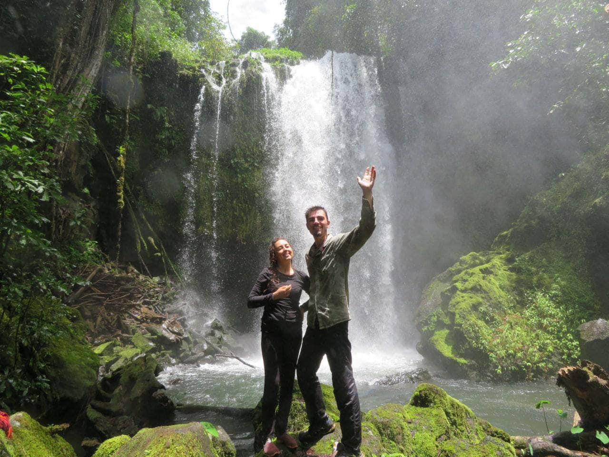
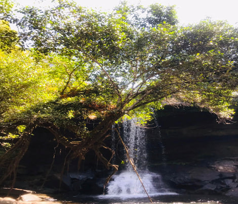
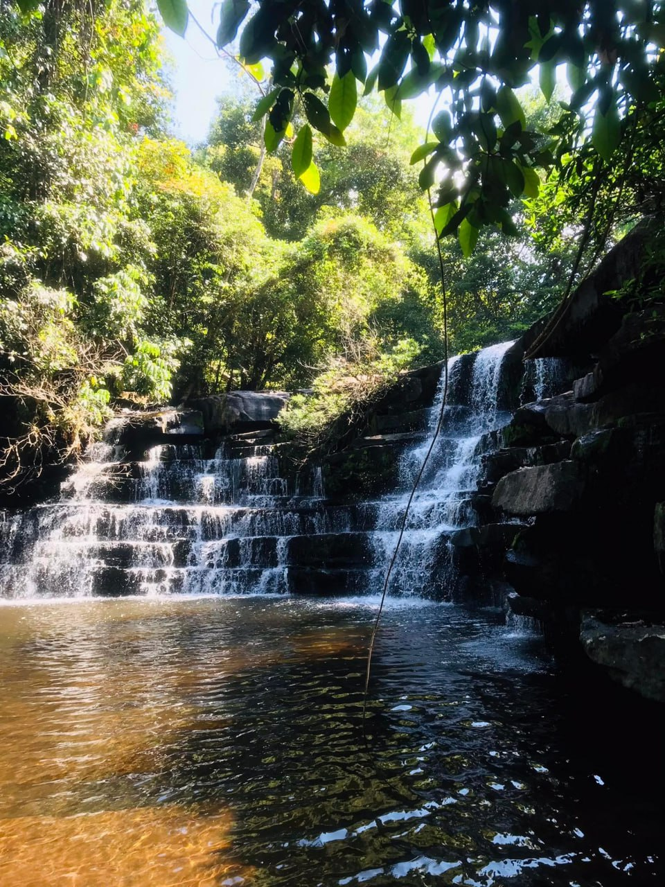
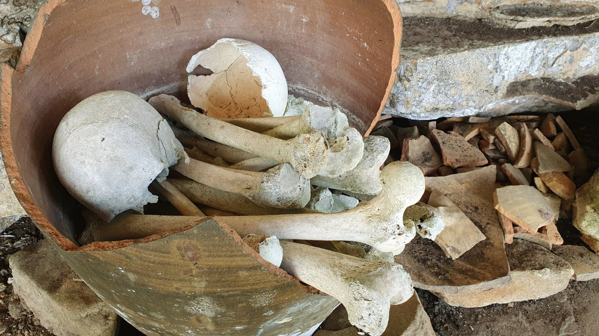

Recreation
១.ឆាយតាប៉ាង
ទឹកធ្លាក់ឆាយតាប៉ាង គឺជាទឹកធ្លាក់ដែលមានកម្ពស់ខ្ពស់ជាងគេបំផុតក្នុងតំបន់អារ៉ែងវាមានកម្ពស់រហូតដល់ ១៥០ ម៉ែត្រ។
ហើយវាមានទីតាំងស្ថិតនៅក្នុងភូមិចំណារ ក្នុងព្រៃជ្រៅ មានចម្ងាយប្រមាណ ២៤ គ.ម ពីស្នាក់ការសហគមន៍។ភ្ញៀវទេសចរអាច
រីករាយជាមួយនឹងការទស្សនាសត្វស្លាបនានា ក៏ដូចជាការរុករកមើលនូវដានជើងសត្វព្រៃនានា។
ឆាយតាប៉ាងដែលមានទីតាំងស្ថិតនៅភូមិចំណារ ឃុំប្រឡាយស្រុកថ្មបាំង ខេត្ដកោះកុង ដែលមានចម្ងាយពីរភូមិចំណារ
១៨ គីឡូម៉ែត ដែលយើងត្រូវចំណាយពេលយ៉ាងតិច២ម៉ោងសម្រាប់ស្មើរជើង យើងអាចធ្វើការជ្រើសរើសការធ្វើដំណើរបាន មានគោយន្ដ
នឹងម៉ូតូ ចំពោះការធ្វើដំណើរ ។
1.Chhay Tapang
Chhay Tapang Waterfall is the highest waterfall in Areng area, it is up to 150 meters high. It is located
in Chamnar village in the deep forest, about 24 km from the community headquarters. Visitors can enjoy bird
watching as well as wildlife footprints.
Chhay Tapang is located in Chamnar village, Prolay commune, Thmor Bang district, Koh Kong province, 18 km
away from Chamnar village, where we need to spend at least 2 hours to walk. We can choose to travel by
motorbike Travel.
២.ឆាយយោង
ទឹកធ្លាក់ឆាយយោងក្នុងរដូវវស្សាកំពុងទាក់ទាញភ្ញៀវទេសចរណ៍បែបថ្មើរជើង ស្ថិតក្នុងឃុំប្រឡាយ ស្រុកថ្មបាំងតំបន់អារ៉ែង
ខេត្តកោះកុង។
សម្រស់ដ៏ល្អឯកនៃទឹកធ្លាក់ឆាយយោងអមជាមួយដើមឈើដែលមានទស្សនីយ៍ភាពប្រៀបបានដូចជាផ្ទាំងគំនូរ ដែលបង្ហាញ
សម្រស់នៅកណ្តាលព្រៃឈើដ៏ធំស្កឹមស្កៃ និងមានចំងាយពីសហគមន៍អារ៉ែង ២៥គីឡូម៉ែត្រ និងមានចំងាយ ១៤
គ.មពីផ្ទះស៉ីអាយភ្នំខ្នងក្រពើ បើយើងធ្វើដំណើរពីភ្នំខ្នងក្រពើទៅ ត្រូវដើរតាមផ្លូវទៅអារ៉ែងរហូតជិតដល់រូងជំនាង
និងឃើញមានដានផ្លូវបត់ស្តាំ ចុះច្រាំងដាច់បន្តិច ហើយដើរចុះបន្តប្រមាណ២គីឡូ និងដល់ទឹកធ្លាក់ឆាយយោង ។
2. Chhay Yong
Chhay Yong Waterfall in the rainy season is attracting pedestrian tourists in Pralay commune, Thmar Bang
district, Areng area, Koh Kong province.
The unique beauty of Chhay Yong Waterfall, accompanied by trees that look like a mural, shows the beauty in
the middle of a huge forest, 25 km from Areng community and 14 km from the CIA house. Phnom Khnong Krapeu If
we travel from Phnom Khnong Krapeu, we have to walk along the road to Areng until we reach the cave and see
traces of the road, turn right down the bank and walk down about 2 km and reach Chhay Yong waterfall.
៣.ឆាយអារ៉ែង
ឆាយអារ៉ែង វាមានចម្ងាយ ១ គីឡូម៉ែត ពីការិយាល័យសហគមន៍អេកូទេសចរណ៍ តំបន់ស្ទឹងអារ៉ែង ។
3.Chhay Areng
Chhay Areng It is 1 km away from Stung Areng Community Ecotourism Office.
៤.ឆាយទឹកច្រាក
ទឹកធ្លាក់ឆាយទឹកច្រាក គឺជាទឹកធ្លាក់ដែលនៅជិតស្នាក់ការសហគមន៍ជាងគេ ស្ថិតក្នុងភូមិកោះ។ទឹកធ្លាក់នេះមាន
ចម្ងាយប្រមាណ ១១ គ.ម ពីស្នាក់ការសហគមន៍។ នៅតាមផ្លូវទៅកាន់ទឹកធ្លាក់ អ្នកនឹងឆ្លងកាត់ភូមិចំនួន ២
រួមមាន ភូមិព្រែកស្វាយ និងភូមិកោះ ហើយនឹងឆ្លងកាត់វាលតារាង ដែលជាទីតាំងល្អសម្រាប់មើលព្រះអាទិត្យរៀបលិច
ពេលធ្វើដំណើរត្រឡប់មកវិញ។ តំបន់នេះមានផ្លូវដ៏ល្អសម្រាប់ជិះកង់ ថ្មើរជើង និងជិះម៉ូតូ។ នៅតាមផ្លូវធ្វើដំណើរ
និងតំបន់ជុំវិញ ភ្ញៀវទេសចរអាចប្រទះឃើញដានជើងសត្វដំរី ជ្រូកព្រៃ សត្វស្លាប និងសត្វព្រៃផ្សេងៗទៀត។
4.Chhay Teuk Chrak
Chhay Teuk Chrak Waterfall is the closest waterfall to the community headquarters in Koh village, about 11
km from the community headquarters. On the way to the waterfall, you will pass two villages, including Prek
Svay village and Koh village, and will pass through Veal Trang, which is a good place to watch the sun set
on the way back.This area has good roads for cycling, pedestrians and motorbikes. Along the way, visitors
can find footprints of elephants, wild boars, birds, and other wildlife.

៥.ទឹកធ្លាក់ឆាយអង្រ្គែង
ទឹកធ្លាក់ឆាយអង្រ្គែង គឺជាទឹកធ្លាក់មួយដែលមានទីតាំងនៅជិត ស្នាក់ការសហគមន៍
ស្ថិតក្នុងភូមិកោះ។ទឹកធ្លាក់នេះមានចង្ងាយ ១៣ គ.ម
ពីស្នាក់ការសហគមន៍ ហើយមានផ្លូវដ៏ល្អសម្រាប់ថ្មើរជើង ជិះកង់ និងជិះម៉ូតូបាន។
នៅតាមផ្លូវភ្ញៀវទេសចរអាចប្រទះឃើញ ដានជើងសត្វដំរីជាច្រើន ជ្រូកព្រៃ បក្សាបក្សី និងសត្វព្រៃជាច្រើនប្រភេទទៀត។
5.Chhay Angkor Waterfall
Chhay Angkor Waterfall is a waterfall located near the community headquarters in Koh village. This waterfall
is 13 km away from the community headquarters and has good roads for pedestrians, bicycles and motorbikes.
Along the way, tourists can see the footprints of many elephants, wild boars, birds and many other wildlife.


៦.ឆាយតាហីង
ឆាយតាហ៊ីងភ្ញៀវទេសចរ អាចជិះរថយន្តតាមផ្លូវពីសាលាស្រុកថ្មបាំងក្នុងចម្ងាយប្រមាណ ២.៥គីឡូម៉ែត្រមុនមកដល់ស្នាក់
ការសហគមន៍អេកូទេសចរណ៍តំបន់អារ៉ែង ដោយនៅខាងស្ដាំដៃ មានស្លាកសញ្ញាធ្វើពីថ្មបន្ទាប់មកគ្រាន់តែបត់ស្តាំ
និងធ្វើដំណើរចូល
ក្នុងប្រហែល ២០០ ម៉ែត្រ នឹងដល់ទឹកស្ទឹងឆាយតាហ៊ីង៕
6. Chhay Ta Hing
Chhay Ta Hing Tourists can drive by car from Thmar Bang District Hall about 2.5 km before arriving.
Areng ecotourism community, with a stone sign on the right hand side, then just turn right
And travel in In about 200 meters will reach the river Chaita Hing.
៧.ឆាយពួរប្រាំបួន
ឆាយពួរប្រាំបួនមានចម្ងាយ២.៥គីឡូម៉ែត្រពីស្នាក់ការសហគមន៍ដោយធ្វើដំណើរឆ្លងកាត់ស្ទឹងក្នុងភូមិព្រែកស្វាយដើម្បី
ទៅដល់។នៅក្នុងរដូវវស្សា ភ្ញៀវទេសចរអាចឆ្លងស្ទឹងដោយជិះ ទូកដ ឬកាណូត ដើម្បីទៅដល់ទីតាំងទឹកឆាយ។ រីឯរដូវប្រាំងវិញ
ភ្ញៀវទេសចរអាចធ្វើដំណើរឆ្លងកាត់ស្ទឹង ដោយយាន្តជំនិះផ្ទាល់របស់ពួកគេ ដើម្បីទៅដល់ទឹកឆាយ។ ទឹកឆាយនេះមាន
ដូចគ្នានឹងទឹកឆាយអារ៉ែងហើយភ្ញៀវអាចមានជម្រើសកំសាន្តមួយចំនួនដូចជាហែលទឹកនិងគេងសម្រាកហាលថ្ងៃនៅលើ
ផ្ទាំងថ្មដ៏រលោងជាដើម។
7. Chhay Pou Nine
Chhay Puor Poun is 2.5 km from the community headquarters, crossing the river in Prek Svay village to
Arrive In the rainy season, tourists can cross the river by boat or canoe to reach the waterfront. The dry
season
Tourists can cross the river in their own vehicles to reach the river.This water has
Same as Chhay Areng and guests can have some entertainment options such as swimming
And sunbathe on the smooth rocks.
៨.ភ្នំម្រេញកង្កែប
ភ្នំម្រេចកង្កែប គឺជាភ្នំដែលមានចម្ងាយជិតស្នាក់ការសហគមន៍ជាងគេ ដែលត្រូវបានគេស្គាល់ថាជា ឋានសួគ៌អារ៉ែង។
វាមានចម្ងាយ ១០ គ.ម ពីស្នាក់ការសហគមន៍ ហើយអាចធ្វើដំណើរទៅដល់បានដោយជិះកង់តាមផ្លូវភ្នំ ជិះម៉ូតូ ឬដោយថ្មើរជើង។
ភ្នំម្រេចកង្កែប គឺជាកន្លែងមួយដែលមានសម្រស់ស្រស់ស្អាត ដែលអាចធ្វើការបោះតង់
និងទស្សនាព្រះអាទិត្យរះនៅពេលព្រឹកព្រលឹម លាយឡំជាមួយពពក និងអ័ព្ទគ្របដណ្តប់ពាសពេញព្រៃឈើ។
ភ្ញៀវទេសចរអាចប្រទះឃើញសត្វកេងកង និងសត្វស្លាបព្រៃជាច្រើនទៀតនៅលើកំពូលភ្នំ។
8. Mountain of Frogs
Phnom Mrek Kang Kep is the closest mountain to the community headquarters, known as Paradise Areng.
It is 10 km from the community headquarters and can be reached by mountain bike, motorbike or on foot.
Phnom Mrek Kang Kep is a beautiful place to camp.
And watch the sun rise in the early morning mixed with clouds and fog covering the forest.
Tourists can see lizards and many other wild birds on the top of the mountain.
៩.ឆ្អឹងបុរាណ
ពាងដាក់ឆ្អឹងមនុស្សបុរាណអាយុរាប់ពាន់ឆ្នាំស្ថិតនៅខ្នងស្រល់ដែលភ្ញៀវទេសចរជាតិនិងអន្តរជាតិភាគច្រើនមិនបានទៅដល់។
ពាងដាក់ឆ្អឹងមនុស្សបុរាណដែលមានអាយុរាប់ពាន់ឆ្នាំនេះមានទីតាំងនៅស្ថានីយខ្នងស្រល់ ឬរូងជំនាង
ដែលស្ថិតក្នុងភូមិទ័ពឃ្លៃ ឃុំប្រឡាយ ស្រុកថ្មបាំង ខេត្តកោះកុង។
ជារូង ចម្រាក់ភ្នំបែរមុខទៅទិសខាងត្បូងស្ថិតនៅច្រាំងដាច់នៃភ្នំដែលមានដើមស្រល់ច្រើនហើយស្ថិតនៅចំណុច៧១១ម៉ែត្រ
ពីកំរិតកំពស់ទឹកសមុទ្រ។ ស្ថានីយនេះ មានពាងមេណាំណយចំនួនបី ដាក់ឆ្អឹងមនុស្សជាច្រើន មានបាតពាងមេណាំណយពីរ
និងអំបែងភាជន៍ផេ្សងទៀតរួមមាន អំបែងក្រឡចិនដែលមានស្រទាប់រលោងពណ៌បៃតង លឿង និង លម្អក្បាច់ឆ្កូត
ព្រមទាំងបំណែកអំបែងចានស្រីសាត់ឆាន់ល័យដែលមានស្រទាប់រលោងពណ៌បៃតង”។
9. Ancient bones
Thousands of years-old ancient human bones lay on pine cones that most national and international tourists
could not reach. This ancient human bone jar, which is thousands of years old, is located at Khnong Sral or
Rong Chumnang station, located in Top Khlai village, Prolay commune, Thmar Bang district, Koh Kong province.
It is a cave facing south, located on the edge of a mountain with many pine trees, at 711 meters.
From sea level. The station has three jars of bone marrow, many of which have two bottom shells.
And other pottery fragments, including Chinese tiles with glossy green, yellow, and scratch ornaments.
As well as pieces of Srey Sat Chanlay plates with a smooth green layer.

១០.វាលតារាង
វាលតារាងមានចម្ងាយ ៤ គ.ម ពីស្នាក់ការសហគមន៍ ស្ថិតក្នុងភូមិកោះ។ កន្លែងនេះអាចធ្វើជាកន្លែងបោះតង់
និងជាកន្លែងល្អបំផុតសម្រាប់គយគន់ព្រះអាទិត្យរៀបលិច។ទីតាំងសម្រាប់ចំណតឧទ្ធម្ភាគចក្រពីមុនក្នុងសម័យសង្គមរាស្ត្រនិយម
ក្នុងសម័យសង្គមរាស្ត្រនិយម នៅវាលតារាង បច្ចុប្បន្នក្លាយជាវាលស្មៅពណ៌បៃតងខ្ចី ដែលជាកន្លែងលេងបាល់ទាត់របស់អ្នកភូមិ
និងជាកន្លែងសម្រាករបស់ភ្ញៀវទេសចរ។
10. Table field
Veal Trang is 4 km away from the community headquarters in Koh village. This place can be a tent camp
And the best place to watch the sun set. Location for the helicopter station before the Sangkum era.
During the Sangkum Reastr Niyum era, the table field now becomes a light green grass field, where the villagers play football
And a place for tourists to relax.
១១.វាលតារាង
ខ្នងសាគីវាមានចម្ងាយ ៥៥ គ.ម ពីស្នាក់ការសហគមន៍ ហើយជាវាលស្មៅដ៏ធំបំផុតនៅតំបន់អារ៉ែង។
11. Table field
Khong Saki It is located 55 km from the community headquarters and is the largest grassland in the Areng area.
១២.ភ្នំខ្នងក្រពើ
ភ្នំខ្នងក្រពើមានទីតាំងនៅតំបន់អារ៉ែង មានចំងាយប្រហែល៥០គីឡូម៉ែត្រពីសហគមន៌អារ៉ែង
ជាតំបន់មានព្រៃស្រល់ក្រាសនិងមានតំបន់វាលរាបដូចក្នុងវីដេអូមានច្រើនសន្ថាន។ភ្នំខ្នងក្រពើជាភ្នំមួយដែលជា
ព្រំប្រទល់រវាង ខេត្តកោះកុងនិងខេត្តកំពង់ស្ពឺមុនទៅដល់កន្លែងនេះយើងត្រូវជិះម៉ូតូកាត់ព្រៃភ្នំនៅតំបន់អារ៉ែង
ទើបយើងទៅដល់ភ្នំនេះ។
និយាយពីបរិយាកាសនៅទីនេះគឺត្រជាក់ជាពិសេសពេលរសៀលពេលយប់និងព្រឹកព្រលឹមនៅទីនេះសំបូរទៅដោយ
ដើមស្រល់ធំៗត្រង់ៗ។នៅទីនិងមានផ្ទះមួយដែរគេតែងតែហៅផ្អះនោះថា ផ្ទះ CI។ផ្ទះនិងគឺជាគោលដៅមួយដែលអ្នកផ្សងព្រង
កំណត់ជាកន្លែងឈប់សម្រាក់របស់ពួកគេហើយណាមួយនៅទីនិងនៅក្បែរប្រភពទឹកផង។
12. Phnom Khnong Krapeu
Phnom Khnong Krapeu is located in Areng area, about 50 km from Areng community.
It is an area with dense pine forest and plain area as in the video, there are many types.
The border between Koh Kong and Kampong Speu. Before reaching this place, we had to ride a motorbike through the mountains in the Areng area.
Only then did we reach this mountain.
Speaking of the atmosphere here is cool, especially in the afternoon, night and early morning here is rich.
Large, straight pine trees. There will also be a house called CI House. The house will be a destination for adventurers.
Identify their resting place and any one near and near the water source.
១៣.វាលខ្នងស្រល់
វាលខ្នងស្រល់គឺជាវាលមានទេសភាពស្រស់ស្អាតជាទីកន្លែងដ៏ល្អបំផុតសម្រាប់ការបោះតង់ស្នាក់នៅក្នុងព្រៃតាមបែប
ផ្សងព្រេងស្ថិតក្នុងតំបន់ស្ទឹងអារ៉ែង មានចម្ងាយប្រហែល ៣០០ គីឡូម៉ែត្រ ពីរាជធានីភ្នំពេញ។
13. Pine field
Pine field is a beautiful field, the best place for camping in the forest.
The adventure is located in the Areng River area, about 300 kilometers from Phnom Penh.

.jpg)
.jpg)
.jpg)